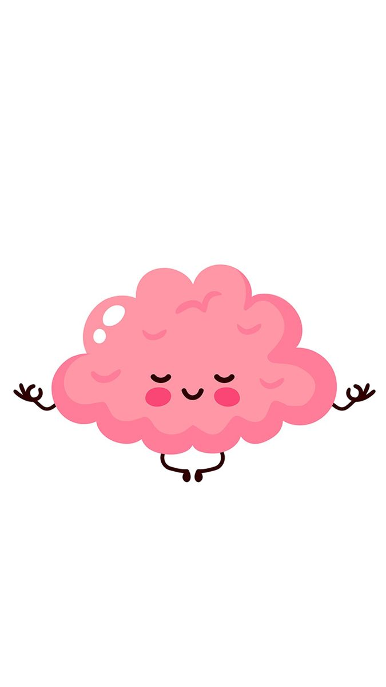
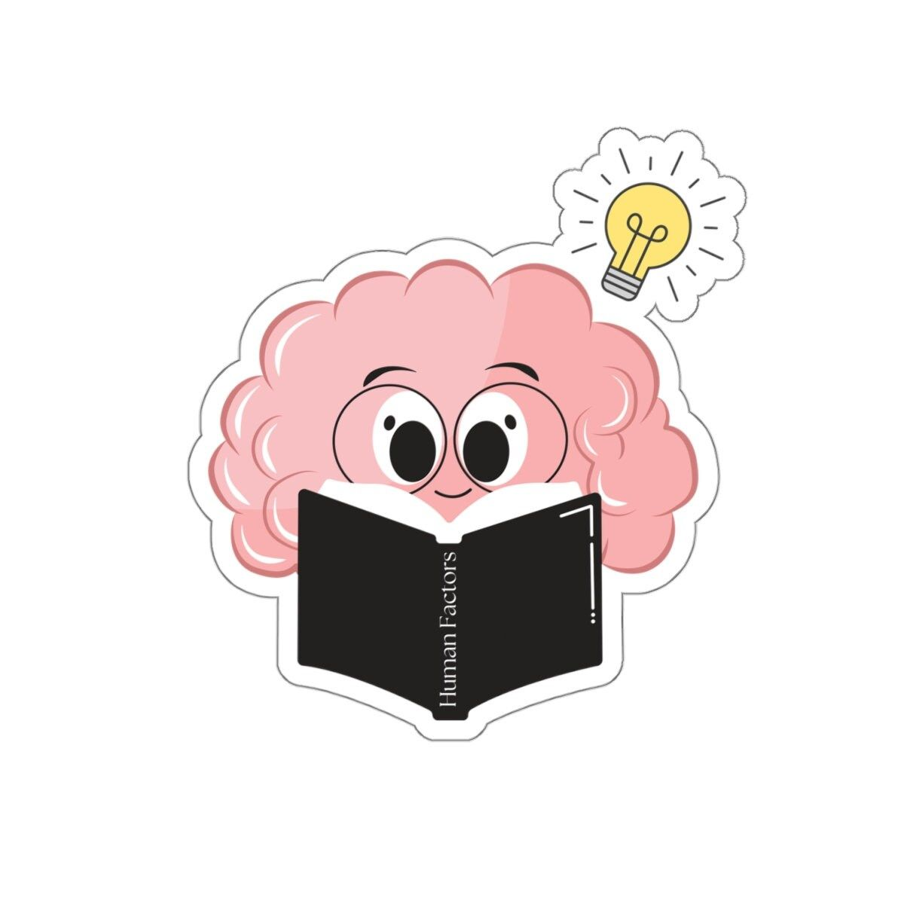
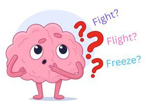
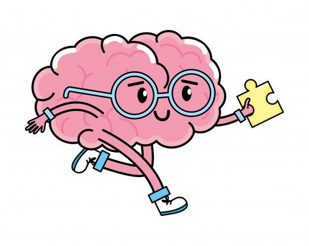

Topik Utama

Mental HealthApa itu Kesehatan Mental?
Memahami pengertian, komponen, dan pentingnya kesehatan mental dalam kehidupan sehari-hari.

Stres & KecemasanMengenal Stres & Kecemasan
Pelajari tanda-tanda stres dan kecemasan serta cara menghadapinya secara sehat.
 Depresi
Depresi
Memahami Depresi
Depresi bukan sekadar sedih. Kenali gejalanya, penyebab, dan langkah awal mencari bantuan.

Tips & EdukasiTips Menjaga Kesehatan Mental
Panduan praktis menjaga kesehatan mental untuk mahasiswa dan remaja.

Minta BantuanKapan Harus Mencari Bantuan?
Tanda-tanda kamu perlu bicara dengan profesional dan cara memulai langkah tersebut.
 Stigma
Stigma
Melawan Stigma Mental
Mengapa stigma terhadap kesehatan mental masih ada dan bagaimana kita mengubahnya.